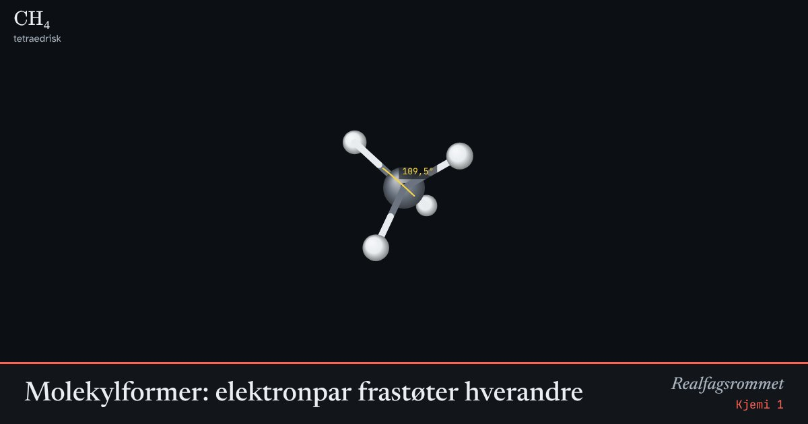

Molekylformer: elektronpar frastøter hverandre
Elektronparene rundt et sentralatom frastøter hverandre og legger seg så langt fra hverandre som mulig. Ledige elektronpar (lilla) tar mer plass og presser bindingene sammen.
Start animasjonen
Formler
Om animasjonen
Metan, ammoniakk og vann har alle fire elektronpar rundt sentralatomet, men ulikt antall ledige par. Derfor er vinklene 109,5°, 107° og 104,5°.
Formen bestemmer om molekylet er polart. CO₂ har polare bindinger, men de peker motsatt vei og opphever hverandre. Vann er vinklet, og bindingene opphever ikke hverandre: vann er et dipolmolekyl.
Den gule buen viser bindingsvinkelen mellom to av bindingene.
Prøv dette
- Hvorfor er vinkelen i vann mindre enn i metan?
- Hvilke av molekylene er polare? Forklar med formen.
- Tegn lewisstrukturen til NH₃ og forklar formen.
- Hvorfor er CO₂ lineært mens H₂O er vinklet?
Kompetansemål
- Kjemi 1: Kjemisk binding og polaritet